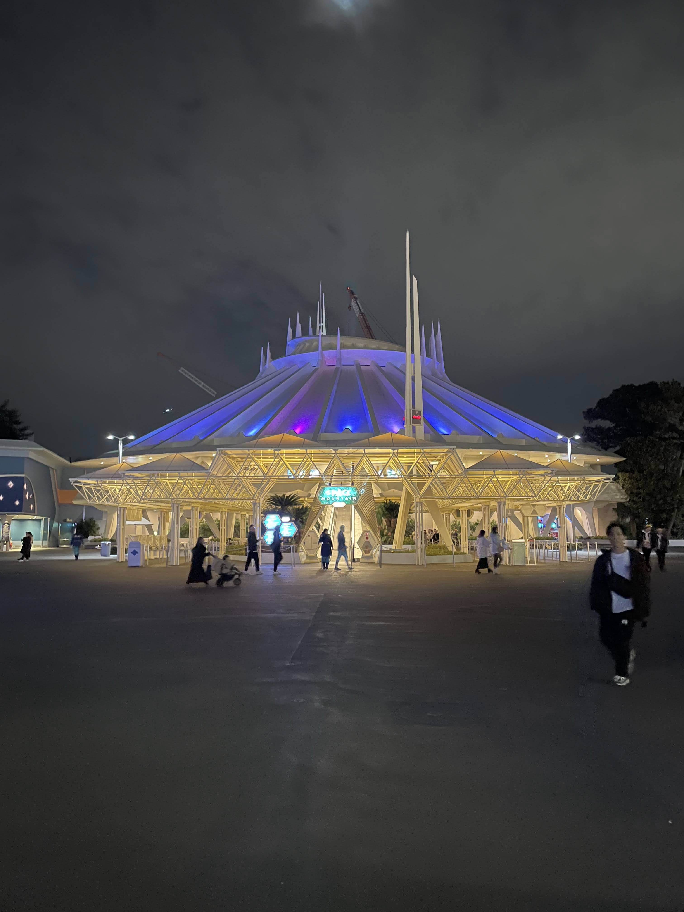
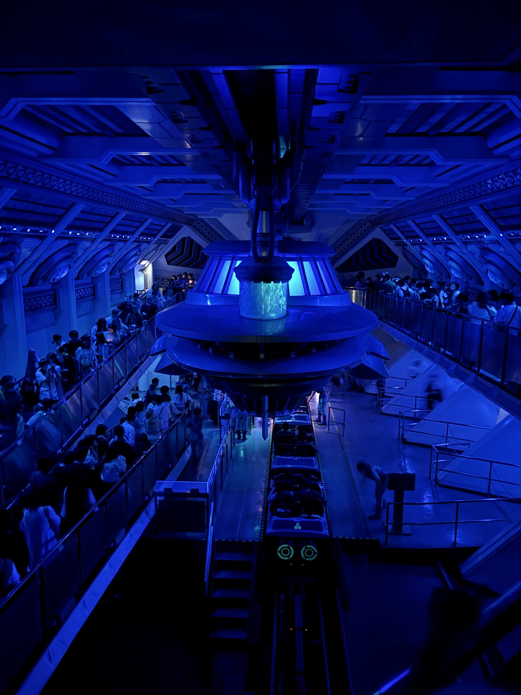
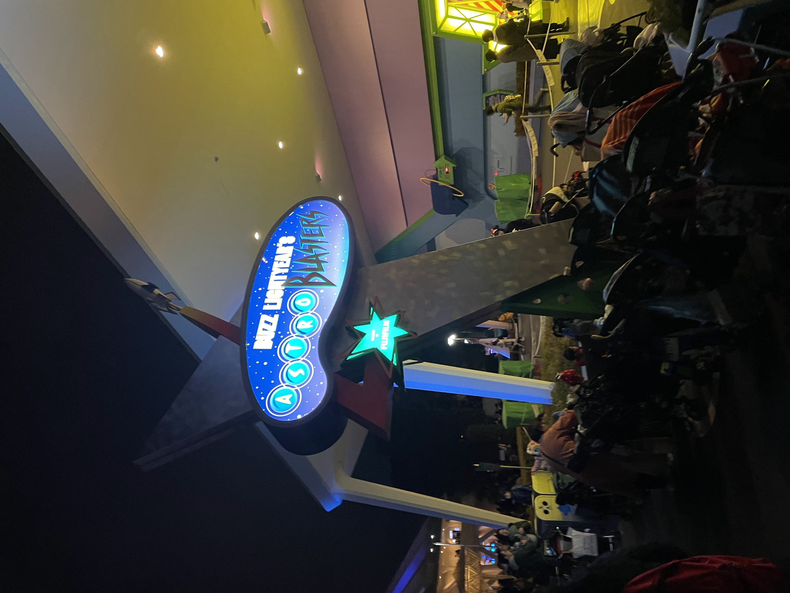

Tomorrowland

I. トゥモローランドが背負う宿命
東京ディズニーランドの右奥に広がる、白く幾何学的な未来都市「トゥモローランド」。このエリアは、ファンタジーランドやウェスタンランドといった「完成された過去」を描く他の土地とは異なり、**「同時代依存（Contemporary Dependency）」**という美しくも過酷な宿命を背負っています。
1955年にアメリカで最初のテーマランドが作られた際、デザインの基盤となったのは、当時の流行であった「未来へのオプティミズム（楽観主義）」でした。しかし、技術が進歩し、かつて夢見た「ロケット」や「宇宙旅行」が日常のものとなった瞬間、未来都市は現実によって追い越され、たちまち「古い過去の跡」へと陳腐化してしまいます。「styles had to keep up（デザインは更新され続けなければならない）」。この絶対的なルールを背負っているからこそ、トゥモローランドは絶えず物理的な変化（自己変革）を課され、常に最新の未来を模索し続ける、最もエネルギーに満ちた土地なのです。
II. スペース・マウンテン：直線の過去と、曲線の未来
1983年の開園からエリアの絶対的象徴として君臨してきた、初代「スペース・マウンテン」。この巨大な純白のドームは、宇宙管制センターであり、未知の宇宙エネルギーを回収する「ステーション」としてのBGSを持っています。
ゲストが乗り込むのは、ステーションにドック入りしている「新型ロケット」です。搭乗プラットフォームでロケットに未知の宇宙エネルギーが急速充填され、そのエネルギーを一気に解放することで、秒読みとともにロケットは大気圏を脱出して超高速度での宇宙旅行へと出発します。2024年7月31日に多くのゲストに惜しまれながら一度クローズし、現在は2027年のリニューアルに向けて新たなロケットの準備が進んでいます。


🚀 【Photo Memoir】ステーションを照らした「青い光」
上の写真は、かつてドーム内の搭乗プラットフォーム（乗り場）の頭上に吊り下げられていた巨大な「宇宙船（エネルギーカプセル）のオブジェクト」です。
このオブジェクトは、ロケットが旅立つたび、消費された宇宙エネルギーを自動的に吸収し、再びロケットへと充填するための装置というBGSが設定されていました。青く美しく脈打つこの光は、これから未知の暗黒宇宙へと旅立つゲストの緊張感とロマンを静かに引き立てる、スペースマウンテンの魂とも言える象徴的な存在でした。
🔮 フランス・パリ：過去の人が夢見た「レトロフューチャー」
実は、フランスのディズニーランド・パリにあるスペース・マウンテンは、東京の「白い近未来的なドーム」とはまったく異なる、**「レトロフューチャー（過去の人々が思い描いた未来）」**をテーマにしています。19世紀のフランスのSF小説家ジュール・ヴェルヌの『月世界旅行』の世界観（スチームパンク）がベースになっており、ドーム全体が真鍮やブロンズで覆われています。
宇宙船（ビークル）を打ち出すため、ドームの横には「コロンビアード大砲」と呼ばれる巨大な大砲が設置され、大爆発の白煙とともに月世界へとゲストを撃ち出すという、クラシックでロマンチックな宇宙旅行が今もなお語り継がれています。
III. スター・ツアーズ：スタースピーダー1401便の緊急出発
日々、スタースピーダー1000が銀河の様々な惑星へとフライトを続けている、星間旅行会社「スター・ツアーズ」。
ゲストが乗り込む「1401便」は、出航前の点検中、整備用ドロイドであるC-3POが不注意からパイロット席に居座った状態で、自動出発許可が下りてしまいます。さらに、宇宙港で帝国軍に強制停車させられ、機内に「反乱軍のスパイ（乗船しているゲストの顔写真）」が潜入していることを告げられます。C-3POはスパイを守り、安全な反乱軍の秘密基地へと送り届けるべく、自動操縦で銀河の様々な惑星へと超空間ワープを繰り返す緊急逃避行へと巻き込まれるのです。
IV. モンスターズ・インク：笑い声あふれる停電の夜
映画『モンスターズ・インク』のその後を描いた「モンスターズ・インク“ライド＆ゴーシーク！”」。
映画の結末において、モンスターズ社は「悲鳴（恐怖）」のエネルギーから「笑い声」をエネルギーに変換するクリーンな方法へと経営方針を転換しました。新社長となったサリーは、遊びにきた人間の少女「ブー」を楽しませるため、マイク・ワゾウスキが発案した「フラッシュライトかくれんぼゲーム」を開催します。
ゲーム開始とともに、お城のメインパワースイッチがオフになり、モンスターシティは夜の停電状態へと包まれます。ゲストはセキュリティトラムに乗り込み、ヘルメットに描かれた「M」のロゴを狙ってライトを照らすことで、隠れているモンスターたちを見つけ出すゲームに参加するのです。
V. バズ・ライトイヤー：帝王ザーグと結晶の遺産
2024年10月に20年の歴史を終えた「バズ・ライトイヤーのアストロブラスター」。このアトラクションは、おもちゃのバズが主人公として活躍する劇中劇アニメの世界を舞台にしていました。

悪の帝王ザーグは、おもちゃたちの万能エネルギー「クリストリック・フュージョン」バッテリーを強奪し、銀河を支配する巨大兵器の稼働を目論んでいました。私たちは新人レンジャーとして、緑色の光線銃「アストロブラスター」を持ち、二人乗りの「XP-38型スペースクルーザー」に乗ってプラネットZへと突入しました。
アトラクションの入り口の天井に飾られていた宇宙船は、私たちが乗ったXP-38型スペースクルーザーではなく、バズ自身が愛用する「42型スタークルーザー」であるという、イマジニアによるマニアックなビジュアルの描き分けがなされていました。クローズ後、ここは『シュガー・ラッシュ』のゲーム世界へと生まれ変りますが、かつて銀河の平和を守るためにアストロブラスターを握りしめ、ザーグの「Z」マークを狙い続けたあの思い出は、トゥモローランドの歴史の一部として今も眠っています。
VI. スティッチ・エンカウンター：宇宙連邦の広大な監視網
シアター型アトラクション「スティッチ・エンカウンター」。この施設は、宇宙の秩序を守る「宇宙連邦（Galactic Federation）」によって設置された最先端の**「スティッチ・モニタリング・ステーション（スティッチ監視宇宙ステーション）」**です。
イタズラ好きで暴れん坊 of エイリアン「試作品626号（スティッチ）」が、宇宙のあちこちを縦横無尽に飛び回ってトラブルを起こさないよう、宇宙連邦のキャスト（オペレーター）たちが巨大なスクリーンを使って彼を24時間監視しています。ゲストは、この監視ステーションへの「一般見学者」として招き入れられますが、不気味で厳格な監視の目をかいくぐり、スティッチがスクリーン越しにいたずらっぽくゲストの顔を覗き込んできて、リアルタイムに会話やゲームを始めてしまう……という、テクノロジーと宇宙のユーモアが融合した微笑ましいBGSが設定されています。